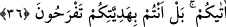

36. (Elçiler, hediyelerle) Süleyman’a gelince şöyle dedi: Siz bana mal ile yardım
mı ediyorsunuz? Allah’ın bana verdiği, size verdiğinden daha iyidir. Hediyenizle
(ben değil) siz sevinirsiniz.
Belkıs tarafından gönderilen elçi, hediye ile “Süleyman’a gelince” elçiye ve elçiyi
gönderene, hazırda bulunanı bulunmayana tağlîb ederek (baskın kılarak) “şöyle dedi:”
Yani, Süleyman (a.s.) kendisi ile heyet arasında meydana gelen hokka ve diğer hâdiseler
cereyan ettikten sonra bu sözü söyledi. Yoksa, ibârenin zâhirinden anlaşıldığı üzere
geldikleri ilk anda onlara bu şekilde hitap etmedi.
“Siz bana” değersiz bir “mal ile yardım mı ediyorsunuz?” destek mi veriyorsunuz?
Buradaki soru red içindir (istifhâm-ı inkârî).
“Mal”a bu ismin verilmesi, devamlı olarak meyilli ve yok olucu olduğu içindir. Bu
yüzden “araz” diye de isimlendirilmiştir. “Mal kahpedir; bir gün attârın evinde, öbür
gün baytarın evinde olur.” diyen kimsenin sözü de buna delâlet eder. Nitekim el-
Müfredât’ta böyle geçmektedir.
Sonra Süleyman (a.s.) bu reddinin sebebini şu sözüyle ortaya koydu: “Allah’ın bana
verdiği,” sizin de eserlerinden bir bölümünü gördüğünüz peygamberlik ve artık daha
ötesi olmayan bu mülk ve saltanat, “size verdiğinden” dünya malından ve metâından
“daha iyidir.” hayırlıdır. Benim ne sizin hediyenize ihtiyacım var, ne de o hediyenin
benim katımda bir değeri var.
Hümâ gibi yücelere uçan kimsenin
Himmet nazarında dünya murdardır
Mesnevî’de der ki:
Ben Süleyman’ım, mülkünüzü istemem
Bilakis ben sizi her türlü yok oluştan kurtarırım
Nasıl olur da sizden altın dileniriz?
Bilakis biz sizi iksirci kılarız
Sebe mülkü de olsa onu terk edin
Çünkü suyla toprağın dışında nice mülkler var
Taht dediğin ancak bir mengenedir
Bulunduğun yeri baş köşe sanıyorsun ama kapıda kalmışsın
Ca’fer-i Sâdık der ki: “Dünya Allah’ın, peygamberlerinin ve velîlerinin katında,
kendisiyle sevinilmeye veya üzülmeye değmeyecek kadar küçüktür. Âlime ve akıllı
kimseye dünyanın geçici malı sebebiyle sevinmek gerekmez.”